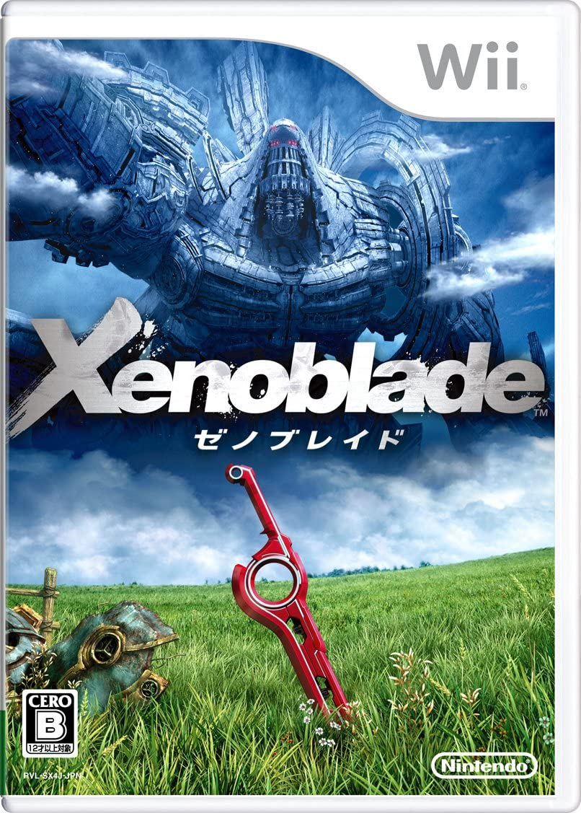
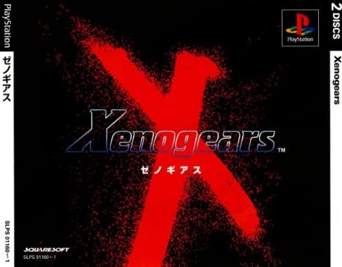

名を冠する者たち
作曲：ACE+(工藤ともり,CHiCO,平松建治)
収録：Xenoblade Original Soundtrack


原作：
Xenoblade
Xenoblade
前半は被処刑用、後半は逆転して処刑用になる熱い曲です！
原作にてユニークモンスターとの戦闘時に使用されました。
上記ユニークモンスターとは、意識してキャラを育てていない限り、
初遭遇時点では大抵の場合まず勝てない強さの敵で、文字通り瞬殺されてしまいます。
しかし、キャラを育て、技構成などを吟味、戦闘中に状況を整えることで勝つことのできる調整がなされており、
上記状況が整い一転攻勢にでるタイミングと、曲の逆転タイミングが何故か大体同じなので、そりゃテンションも上がりますよね。
原作については主人公が大乱闘に参戦していることもあり、ご存じの方も多いかもしれませんが、
まだまだ素晴らしい曲がたくさん使用されており、ボーイ・ミーツ・ガールのストーリー、様々な種族年齢の仲間たち、
巨神というとんでもなく大きい生命体が舞台となっている傑作RPGとなっておりますので
JRPG好きの方はぜひプレイされてはいかがでしょうか！(現在だとWii、3DS、swichでそれぞれ販売中です！)
原作にてユニークモンスターとの戦闘時に使用されました。
上記ユニークモンスターとは、意識してキャラを育てていない限り、
初遭遇時点では大抵の場合まず勝てない強さの敵で、文字通り瞬殺されてしまいます。
しかし、キャラを育て、技構成などを吟味、戦闘中に状況を整えることで勝つことのできる調整がなされており、
上記状況が整い一転攻勢にでるタイミングと、曲の逆転タイミングが何故か大体同じなので、そりゃテンションも上がりますよね。
原作については主人公が大乱闘に参戦していることもあり、ご存じの方も多いかもしれませんが、
まだまだ素晴らしい曲がたくさん使用されており、ボーイ・ミーツ・ガールのストーリー、様々な種族年齢の仲間たち、
巨神というとんでもなく大きい生命体が舞台となっている傑作RPGとなっておりますので
JRPG好きの方はぜひプレイされてはいかがでしょうか！(現在だとWii、3DS、swichでそれぞれ販売中です！)
カイネ/救済
作・編曲：岡部啓一、石濱翔 作詞・歌：Emi Evans
収録：NieR Gestalt & Replicant Original Soundtrack


原作：
NieR Replicant
NieR Replicant
美しいピアノの旋律とEmi Evansさんの歌声が組み合わさった美しく優しい曲です。
原作で曲名にもあるキャラクター「カイネ」が仲間に助けられるシーンでよく使用されていました。
元々は孤独であったキャラクターという境遇も相まって、上記のシーンはとても心打たれるものとなっております。
心癒されること間違いなしな曲となっておりますので、なにか失敗をして落ち込んでいるとき、
精神的に疲れてしまったときなどには本曲を一度視聴されてはいかがでしょうか。
原作で曲名にもあるキャラクター「カイネ」が仲間に助けられるシーンでよく使用されていました。
元々は孤独であったキャラクターという境遇も相まって、上記のシーンはとても心打たれるものとなっております。
心癒されること間違いなしな曲となっておりますので、なにか失敗をして落ち込んでいるとき、
精神的に疲れてしまったときなどには本曲を一度視聴されてはいかがでしょうか。
飛翔
作曲：光田康典
収録：ゼノギアス オリジナル・サウンドトラック


原作：
ゼノギアス
ゼノギアス
大空が瞼に浮かぶような印象の非常に解放感のある曲です。
ネタバレになるので詳細は省きますが、個人的には作中屈指の感動する場面で使用されました。
この曲が後ろに流れるバトルなんて負ける気がしませんよね...！
原作はFFVIIと同じ時期に発売されたプレイステーションのゲームとなっておりますが、
膨大な伏線が散りばめられた重厚なストーリー、RPG屈指の強さを誇る仲間キャラが後半さらに強くなるなど
面白さ満載の作品で、今ならPSアーカイブに配信もされております(要、PS3 or PSvita)ので、
ゲームのストーリーを重視される方には、是非ともプレイしていただきたい！
ネタバレになるので詳細は省きますが、個人的には作中屈指の感動する場面で使用されました。
この曲が後ろに流れるバトルなんて負ける気がしませんよね...！
原作はFFVIIと同じ時期に発売されたプレイステーションのゲームとなっておりますが、
膨大な伏線が散りばめられた重厚なストーリー、RPG屈指の強さを誇る仲間キャラが後半さらに強くなるなど
面白さ満載の作品で、今ならPSアーカイブに配信もされております(要、PS3 or PSvita)ので、
ゲームのストーリーを重視される方には、是非ともプレイしていただきたい！